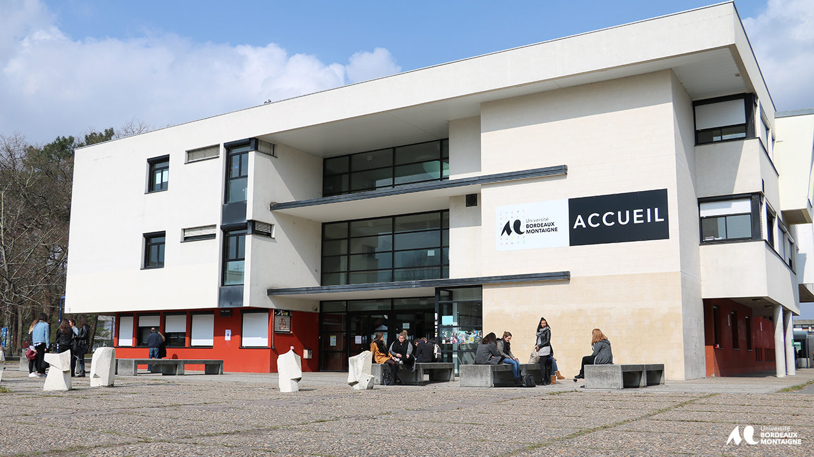
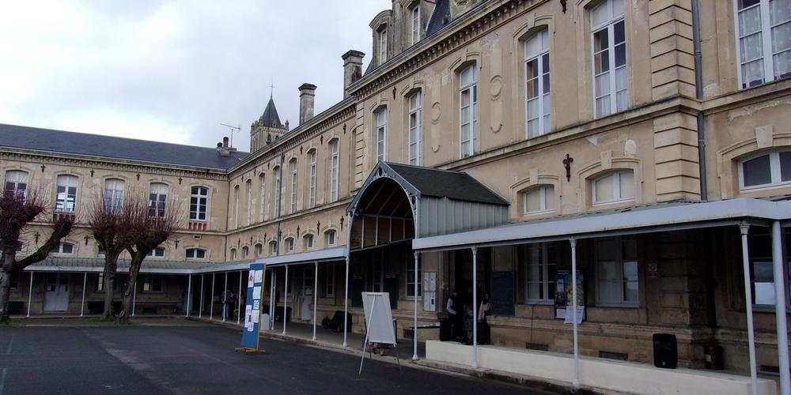
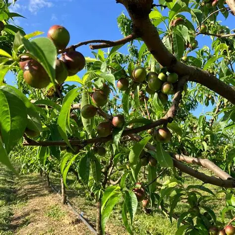
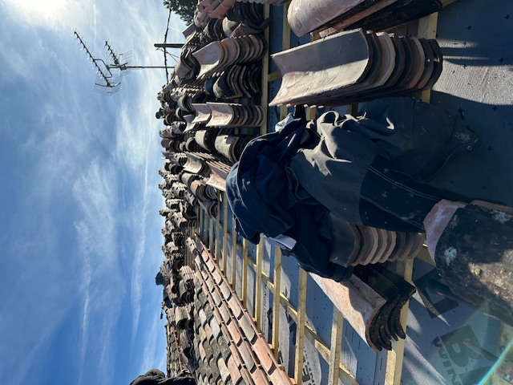
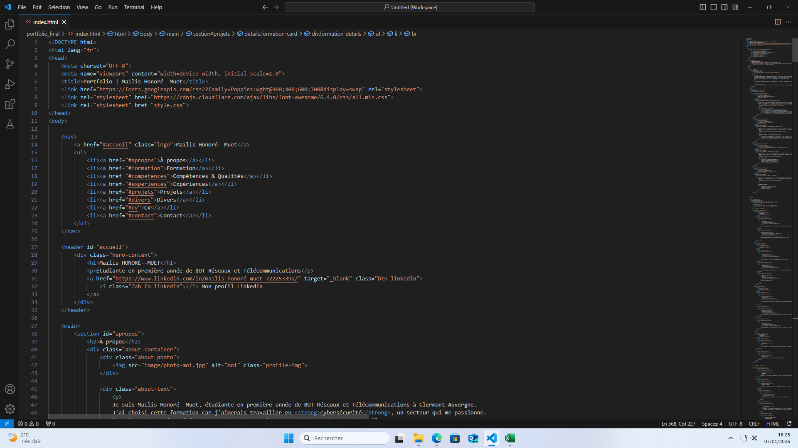
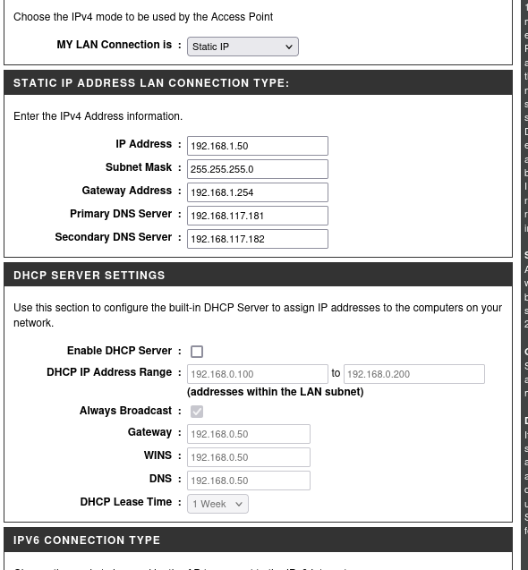
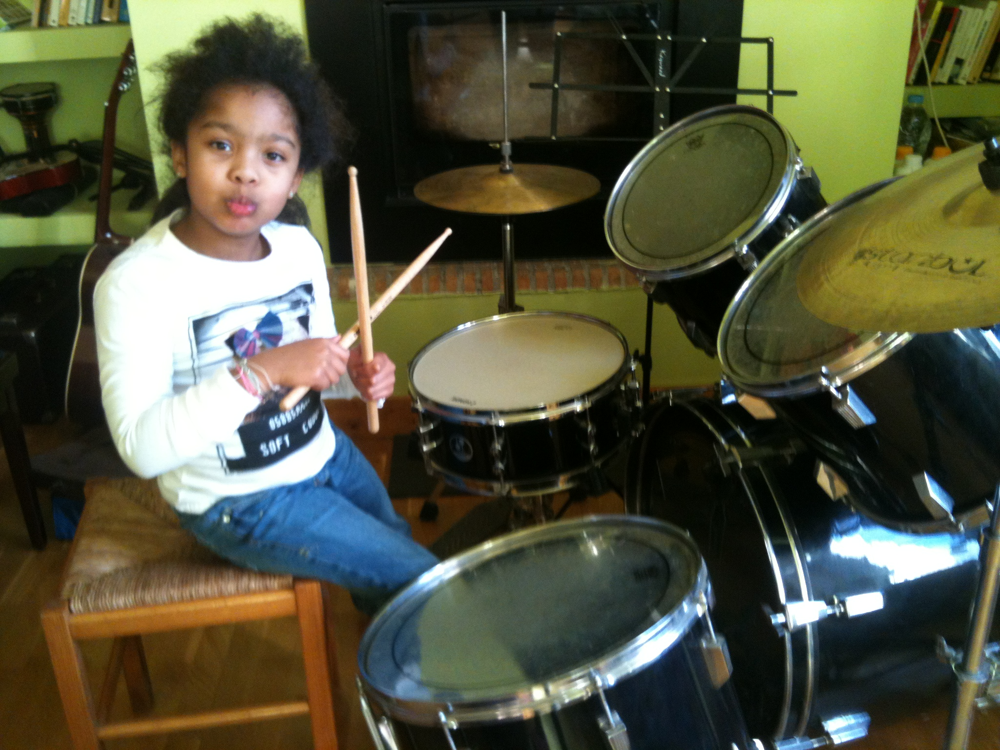
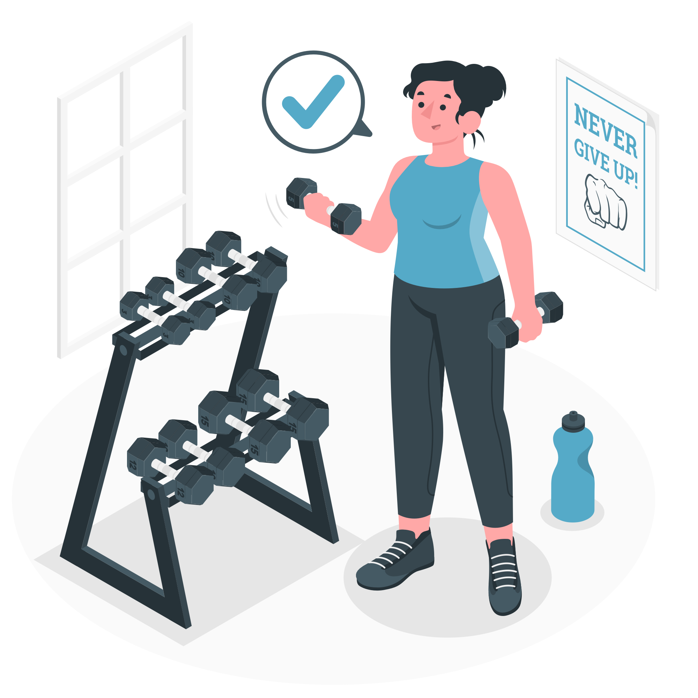

À propos
Je suis Maïlis Honoré--Muet, étudiante en première année de BUT Réseaux et Télécommunications à Clermont Auvergne. J'ai choisi cette formation car j'aimerais travailler en cybersécurité, un secteur qui me passionne. Je suis déterminée et rigoureuse dans mon travail.
Forte de ces compétences je suis à la recherche d'un stage à l'étranger lors de ma deuxième BUT, afin de développer mes compétences en Réseaux et Télécommunication en entreprise et d'améliorer mon anglais. Le stage débutera en Avril 2027.
Formation
2025
BUT Réseaux et Télécommunications
BUT Réseaux et Télécommunications
IUT Clermont Auvergne - Aubière (63)
- QU'EST CE QUE C'EST : Le BUT Réseaux et Télécommunications est une formation en 3 ans dans le domaine du numérique.
- OBJECTIF : (Selon UCA.fr) "Son objectif est de former des techniciens polyvalents qui maîtrisent les réseaux (entreprises, opérateurs, Internet) et systèmes informatiques, les télécoms (transmissions, téléphonie), l'informatique (programmation, cloud, web). Ils sont capables d’installer, de configurer, de sécuriser et faire évoluer les équipements et l’informatique nécessaires aux réseaux et aux télécommunications."
-
COMPÉTENCES ACQUISES : (Selon UCA.fr)
- Administrer les réseaux et l’Internet
- Connecter les entreprises et les usagers
- Créer des outils et applications informatiques pour les R&T
- Administrer un système d’information sécurisé (parcours Cybersécurité)
- Surveiller un système d’information sécurisé (parcours Cybersécurité)
2024-2025
Licence 1 de Théâtre - obtenue -
Licence 1 de Théâtre - obtenue -
Université Bordeaux Montaigne, Bordeaux (33)
- QU'EST CE QUE C'EST : La Licence Théâtre est une formation en 3 ans dans le domaine de l'architecture.
-
OBJECTIF : (Selon u-bordeaux-montaigne.fr) "Les objectifs de la licence Théâtre sont pluriels : [...] elle entend ouvrir les étudiants aux cultures et spectacles du monde (théâtres du monde), à des approches culturelles et critiques des spectacles (anthropologie, sociologie, ethnographie) et à l’environnement institutionnel et professionnel des métiers du spectacle vivant (droit et économie de la culture, forum des métiers, etc.)."

-
COMPÉTENCES ACQUISES : (Selon u-bordeaux-montaigne.fr)
- Développer une argumentation à l'écrit comme à l'oral et analyser avec esprit critique diverses ressources dans son domaine de spécialité
- Maîtriser les instruments bibliographiques, et les principales techniques de recherche documentaire
- Comprendre les enjeux d’un recrutement et de l’identité numérique
2023-2024
1 ère année d'École Nationale Supérieure d'Architecture - obtenue -
1 ère année d'École Nationale Supérieure d'Architecture - obtenue -
ENSA Paris Val de Seine, Paris (75)
- QU'EST CE QUE C'EST : L'école National Supérieure d'Architecture est une formation en 3 ans dans les domaine de l'art et la science de concevoir des espaces et des structures.
-
OBJECTIF (selon onisep.fr): L'objectif de cette formation est de former des professionnels capables de concevoir des bâtiments et d'aménager des espaces.
- COMPÉTENCES ACQUISES :
- Conception Architecturale et Urbaine
- Maîtrise Technique et Constructive
- Représentation et Outils Numériques
- Culture, Sciences Humaines et Droit
2022-2023
Baccalauréat général - Mention Bien -
Baccalauréat général - Mention Bien -
Lycée Jean Renou, La Réole (33)
- QU'EST CE QUE C'EST (selon lareole.fr) : Le lycée Jean Renou est un établissement public d’enseignement général de 500 élèves environ.
-
OPTION : Mathématiques et Anglais Monde Contemporain

- COMPÉTENCES ACQUISES :
- Capacité d'analyse et de synthèse
- Autonomie et organisation
- Esprit critique
- Aisance à l'oral
Compétences & Qualités
RÉSEAUX
RÉSEAUX
PROGRAMMATION
PROGRAMMATION
TÉLÉCOMMUNICATION
TÉLÉCOMMUNICATION
LANGUES
LANGUES
Expériences Professionnelles
Été 2025
CUEILLETTE DE FRUITS
CUEILLETTE DE FRUITS
- TITRE : Cueillette de fruits
- CONTEXTE : Job d'été
- OBJECTIF : Travail effectué pour mettre de l'argent de côté pour mes études
-
TRAVAIL : Le travail effectué était la cueillette de fruits (brugnons, nectarines et pêches), la mise en barquette des fruits destinés à la vente et le chargement du camion pour les livraisons. Durant ce travail nous avons également fait l'épamprage des vignes. "L'épamprage consiste à supprimer les pampres, c'est-à-dire les rameaux indésirables qui poussent sur le pied de vigne ou sur le tronc." (selon chateauberne-vin.com)
 - RÉSULTATS : Ce travail m'a appris la détermination, la persévérance et l'éfficacité, car malgrés de fortes chaleurs il aut être performant et ne pas abandonner
Février 2024
STAGE DE COUVREUR CHARPENTE
STAGE DE COUVREUR CHARPENTE
- TITRE : Stage de couvreur charpente
- CONTEXTE : Stage ouvrier dans le cadre d’étude en architecture.
- OBJECTIF : Stage effectué pour mieux comprendre les pratiques professionelles de l'entreprise du bâtiment.
-
TRAVAIL : Le travail effectué était la fabrication du béton, la pose de tuilessur le toit, le le nettoyage du site ainsi que le démontage de la structure du toit.
 - RÉSULTATS : Ce travail m'a appris la le travail manuel, la fabrication de béton et l'esprit d'équipe par le biais des 2 différents chantiers ou j'ai travaillé durant ce stage.
2022
ASSOCIATION LYCÉENNE POUR L’UKRAINE
ASSOCIATION LYCÉENNE POUR L’UKRAINE
Lycée Jean Renou - La Réole (33)
- TITRE : Association lycéenne pour l'Ukraine
- CONTEXTE : Association dans un contexte de guerre (Ukraine- Russie)
-
OBJECTIF ET TRAVAIL :
- Collectes de produits de première nécessité;
- Envoi des produits récoltés à d'autres associations pour qu'ils puissent les envoyer en Ukraine;
- Sensibilisation dans les classes.

- RÉSULTATS : Cette association m'a appris le partage, la reconnaissance face à nos privilèges mais aussi l'organisation grâce aux collectes.
Projets
2025
Portfolio WEB
Portfolio WEB
- TITRE : Portfolio Web
- CONTEXTE : Création d'un portfolio Web en SAÉ14.
- OBJECTIF : L'objectif était de créer un portfolio complet et numérique afin de démontrer nos compétences et réalisations à travers des projets concrets.
-
TRAVAIL : Le travail effectué était la création d'un script HTML et CSS grâce aux cours enseignés et à des recherches personnelles (exemple de site pour recherches : w3schools.com).
 - RÉSULTATS : Ce travail m'a permis de m'améliorer en HTML et CSS et à faire une introspection personnelle afin de voir les points que je dois améliorer.
2025
Configuration d'un point d’accès WiFi 802.11 et manuel Dlink DAP2020
Configuration d'un point d’accès WiFi 802.11 et manuel Dlink DAP2020
- TITRE : Configuration d'un point d’accès WiFi 802.11 et manuel Dlink DAP2020
- CONTEXTE : Exercice de TP dans le cadre du cours Initiation Réseaux
-
OBJECTIF :
- Installer et Configurer le point d’accès manuel Dlink DAP2020 et WIFI IEEE-802.11
- manuel Dlink DAP2020
- Mettre en place une sécurité d’accès au point daccès.
-
TRAVAIL : Dans ce TP, nous étions deux. Dans ce travail groupe, j'ai effectué la configuration manuel du Dlink DAP2020 en entrant son adresse IP par défaut (192.168.0.50) sur internet.

Pour faire la configuration du DLink il faut renseigné sa nouvelle adresse IP, son masque (en /24), l'adresse IP de la passerelle par défaut et les adresse IP du serveur DNS primaire et secondaire.
J'ai également changer l'adresse IP de l'ordinateur connecté filairement au DLink pour mettre sa carte Réseau Ethernet dans le même réseaux que celui ci.
commande utilisée : sudo ip a a 192.168.1.53/24 dev enp1s0
- sudo sert a éxécuter la commande en tant qu'administrateur.
- ip a a (ip address add) sert à ajouter une adresse IP
- dev enp1s0 représente la carte Réseau Ethernet ciblée. (le dev signifie device qui veut dire appareil)
- RÉSULTATS : Le point d'accès WIFI est opérationnel
Divers
Depuis plus de 12 ans
Pratique instrumental et créations de musiques
Pratique instrumental et créations de musiques
- TITRE : Pratique instrumental et création de musiques
- CONTEXTE : Curiosité et défis personnels.
- OBJECTIF : Devenir multi-instrumentistes et être capable de produire une musique de A à Z en jouant tous les instruments qui s'y trouve.
-
TRAVAIL : J'ai commencé la musique très jeune et j'ai eu l'occasion de pratiquer en cours ou en autodidact divers instruments (batterie,
clarinette, piano, chant et oridinateur). Je fais de la MAO (Musique assistée par Ordinateur), c'est à dire que je créee de la musique avec des instruments virtuels sur mon ordinateur J'ai également fait partie d'une classe JAZZ durant toutes années collège.
 - RÉSULTATS : Cette passion m'a appris l' écoute, la polyvalence et la communication (autre que par des mots).
Depuis 2020
Salle de sport
Salle de sport
- TITRE : Salle de sport
- CONTEXTE : Envie dechangements.
- OBJECTIF : Maintenir mon corps en bonne santé.
-
TRAVAIL : J'ai commencé la salle de sport au collège en participant à des cours collectifs. Maintenant je fais aussi de la musculation seule ou avec des amis.
 - RÉSULTATS : Le sport m'a enseigné la cohésion d'équipe lors des cours collectifs ainsi que la patience car les résultats attendus ne sont pas immédiats
2023
Participation à l’orchestre européen
Participation à l’orchestre européen
- TITRE : Participation à l’orchestre européen (en clarinette)
- CONTEXTE : Participation dans le cadre d'un échange avec Erasmus et avec l'option musique de mon lycée.
- OBJECTIF : Apprendre et faire une représentation des morceaux du groupe cubain Buena Vista Social Club.
-
TRAVAIL : J'ai commencé la salle de sport au collège en participant à des cours collectifs. Maintenant je fais aussi de la musculation seule ou avec des amis.
- RÉSULTATS : Cette échange m'a permis d'améliorer mon anglais, grâce à tous les musiciens européens présents. J'ai également appris l'écoute surtout quand on joue dans un groupe aussi grand.
Pendant 3 ans
Éclaireur de France
Éclaireur de France
- TITRE : Éclaireur de France
- CONTEXTE : Envie d'émancipation lors de mes années collège.
- OBJECTIF : Devenir plus autonome et savoir se débrouiller dans la nature.
-
TRAVAIL : Aux Éclaireurs de France on nous apprends à créer, à l'aide de cordes et de matériaux trouver en forêts (branches, feuillages, ...), tous les équipements nécessaire sur un campement. Par exemple, nous réalisions notre espaces repas en faisant des tables et des bancs entre deux arbres.
- RÉSULTATS : J'ai appris l'autonomie et l'art manuel.
Mon CV
Contact
Si vous êtes intéressez par mon profil n'hésitez pas à me contacter !